17 October 2008
Mobility exposes people to the unfamiliar. Mobile devices can help them cope with it. As an example, mobility contacts people with the world's seven thousand languages, and mobile camera phones could get written expressions in any language translated for users.
Imagine yourself a tourist, relief volunteer, refugee, or migrant. You encounter signs, headlines, menus, billboards, movie titles, political posters, graffiti, museum captions, tombstone inscriptions, building names, bus schedules, drug instructions, and forms written in languages and scripts you don't know. A camera phone could determine the original languages and give you translations. You and interlocutors could also use it for written conversations. It could make travel and migration safer and more productive.
The proposed solution integrates the mobile camera phone, location sensing, language recognition, OCR, automatic translation, human translator networks, and human computation. The user takes a photograph, selects text in it for translation, and transmits it with its location to a language-recognition service. It determines the original language, performs OCR on the text, and sends the task to a translation service, which uses automatic, human, or hybrid human-machine translation and returns the translation to the telephone. In time, some of these functionalities could be performed by the phone.
This solution would be superior to existing services in universality, ubiquity, speed, and cost. The Language Line Personal Translator Service takes 2-3 business days and charges $99 for 75 words between, for example, Farsi and Thai (https://www.languageline.com/main/files/WebPTPriceSheet.doc).
Some projects for translating camera phones have been announced, but none has become operational and available for use by the public. An article in the New York Times on 14 March 2002 by Anne Eisenberg ("What's Next; Point, Shoot and Translate Into English") describes an IBM project that has been prototyped but not produced. SpeechGear has announced (http://www.speechgear.com/article.aspx?cat=release&num=119) that it has patented a set of "instant translation technologies" (http://patft.uspto.gov/netacgi/nph-Parser?Sect1=PTO1&Sect2=HITOFF&d=PALL&p=1&u=%2Fnetahtml%2FPTO%2Fsrchnum.htm&r=1&f=G&l=50&s1=7046137.PN.) and has announced a "new product" named "Compadre: Camera" that "supports over 180 languages" (http://www.speechgear.com/camara.aspx). SpeechGear says that Compadre: Camera is available at SpeechGear's store, but it isn't. Hitachi has announced OCR software for camera phones that can recognize Japanese text (http://www.forbes.com/infoimaging/feeds/infoimaging/2005/03/18/infoimagingasiapulse_2005_03_18_ix_4427-0236-.html) and has stated an intent to commercialize it, but it has not become a commercial product or tool. PiXlogic has described a possible scenario in which its text-recognition software could be used for translation (http://www.pixlogic.com/solutions/mobile.html), but has not announced that any such product exists.
Addendum. Products available after this report was written:
Helping people overcome language barriers and the opportunity for vicarious travel and voyeurism could motivate volunteers to help, as they do in multilingualizing the Universal Declaration of Human Rights, the Wiktionary dictionary, the Google search engine's user interface, the WordNet lexical database, and other resources. Thus, this solution could make use of "human computation" (http://norfolk.cs.washington.edu/htbin-post/unrestricted/colloq/details.cgi?id=484).
The user interface permits specifying the required reliability and urgency (thus willingness to pay), and identifying the source language and content category if known. It notifies the user of completed translations and stores and displays them. The user can define and override output-language preferences.
A translator interface solicits translations, displays images and recognized texts, optionally magnifies text segments, and accepts translations. A mobile version facilitates urgent task assignments.
Continental free-trade zones, international relief and peacekeeping, eco-tourism, and growing wealth among speakers of non-international languages increasingly promote short-term contact where rapid text translation would be valuable. However, strangers taking photographs can invade privacy, commit espionage, and steal trade secrets. Such complications could depress the use of the proposed solution.
The proposed experiment will evaluate two elements of a user interface. Work on other elements and on a translator interface will be deferred.
The experiment compares five values of a "text selection" variable: (1) no selection, (2) rectangular cropping, (3) underlining, (4) circling, (5) underlining and circling. Value 1 could apply to any device. Value 2 could apply to devices with four directional arrows. Values 3, 4, and 5 could apply to devices with touch-sensitive screens and styli.
It also compares two values of an "output format" variable: keyed and embedded. A keyed translation appears below the image and the recognized text. If text has been selected, each contiguous region of selected text is keyed to its translation segment. An embedded translation is superimposed on the image, where the corresponding original expressions were, a visual dubbing, and the recognized text is below.
The experiment will examine the effects of text selection on the selected images and texts, transaction time, and user satisfaction, and also the effects of output format on user satisfaction.
The subjects will be a convenience sample of volunteers available to the investigators.
The stimuli will be a stack of 15 paper-printed text-containing images typical of views in exotic locations. Each subject will review the stack and select 10 of them for translation. Subjects will be randomly assigned to combinations of the independent variables' values. Tangible implements will be used to simulate cropping, underlining, and circling.
Each subject, after processing all the selected images, will complete a satisfaction questionnaire, then see a sample of translations of the type to which the subject has been assigned (keyed or embedded), and then complete a second satisfaction questionnaire.
To control for the selected images as a mediating influence on transaction time, the latter will be compared image-by-image.
Some possible results are:
It is not obvious how to define "extraneous text", but one can likely find or create images that contain heterogeneous texts and make the assumption that all texts in such images are extraneous except one.
If the above results were obtained, one could conclude that cursor-based interfaces will be uncompetitive with stylus-based interfaces for panlingual mobile cameras, that text marking will be more satisfactory if it is emphatically optional than if it is suspected of being de-facto obligatory, and that the development and testing of a prototype deserves consideration.
I gratefully acknowledge comments and suggestions by Susan Colowick.
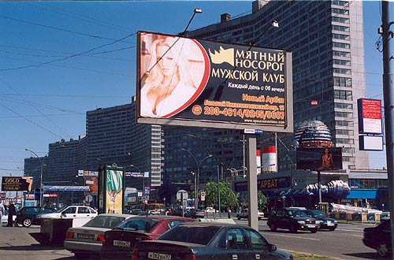
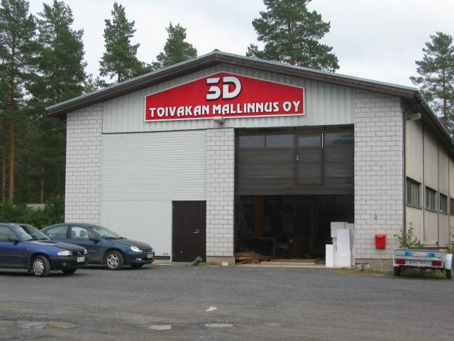
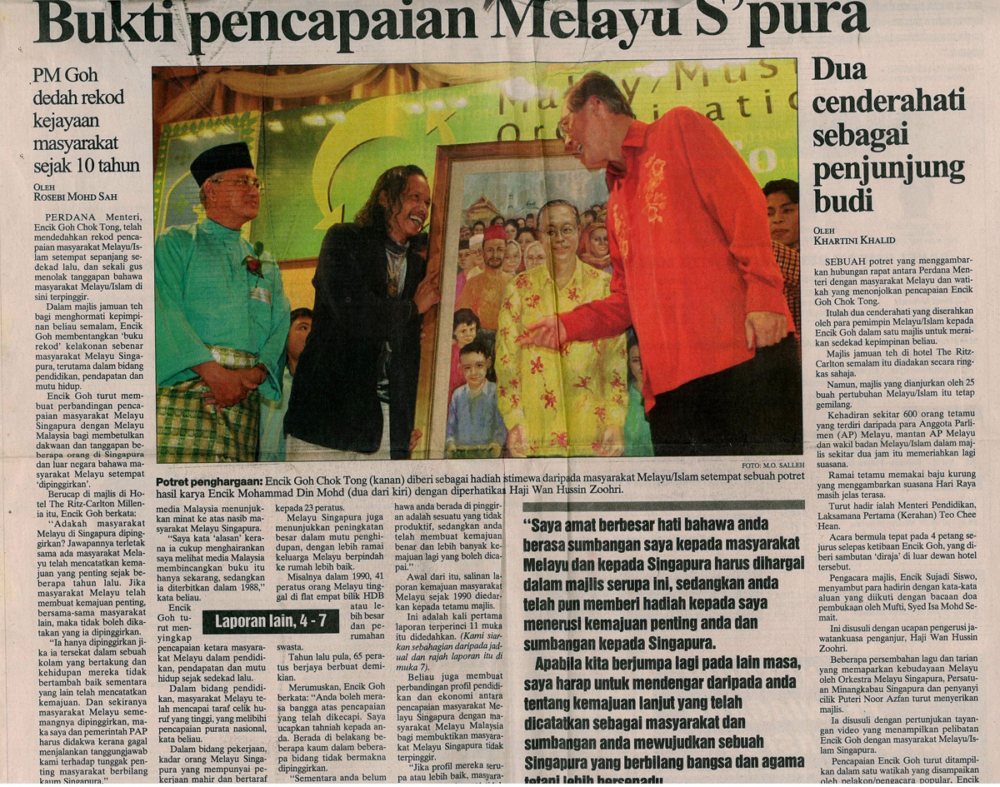
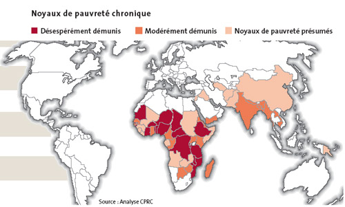
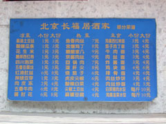
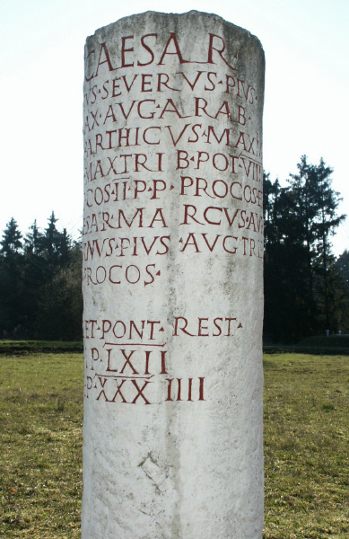
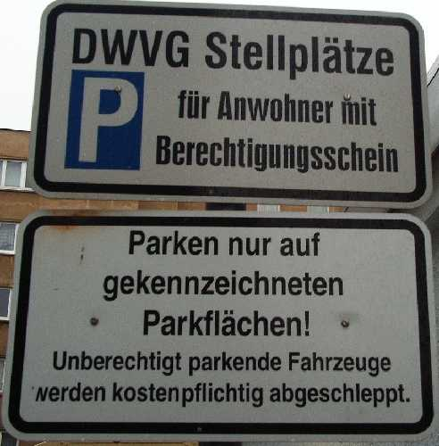
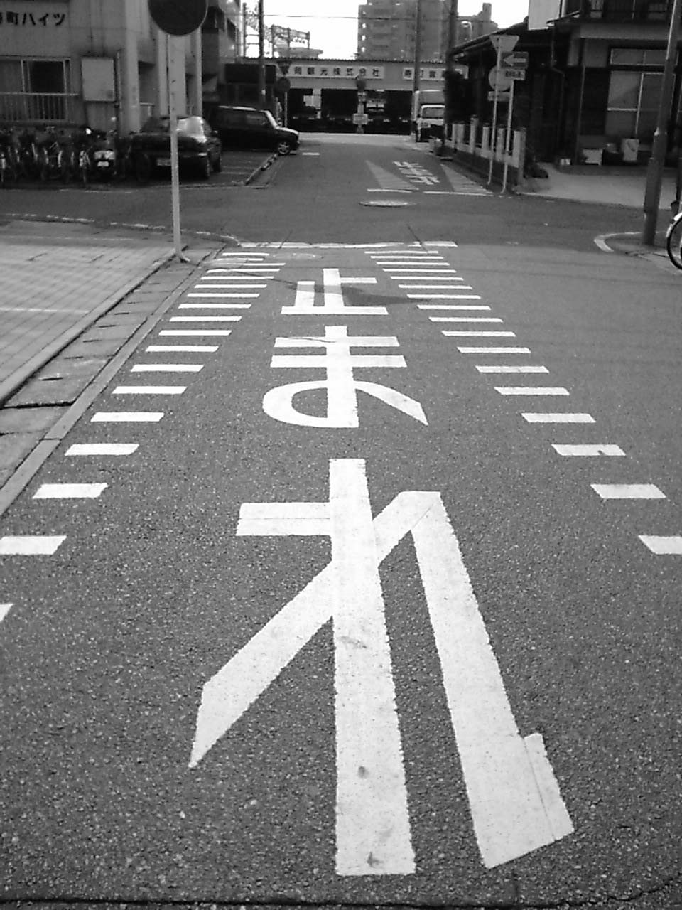
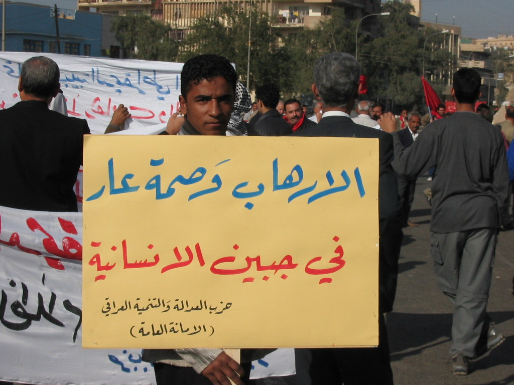
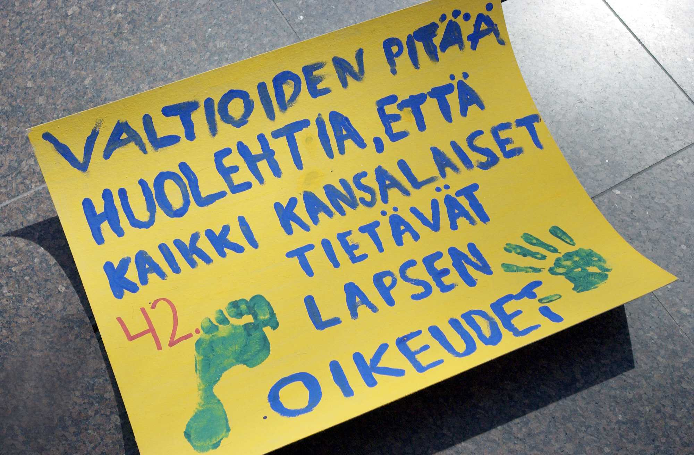
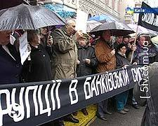